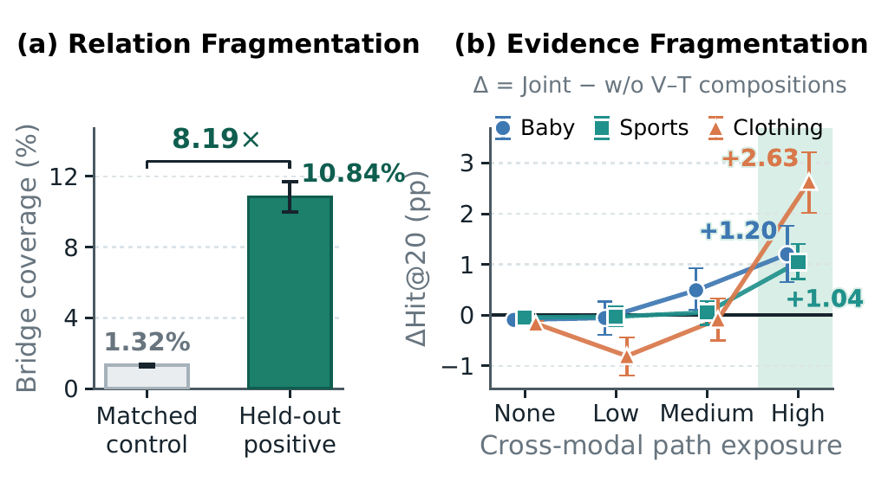
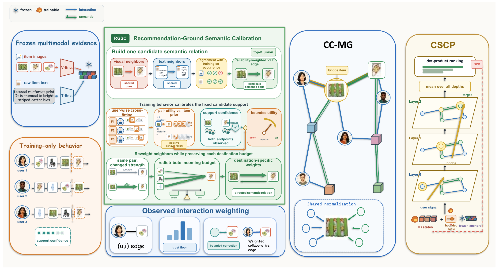
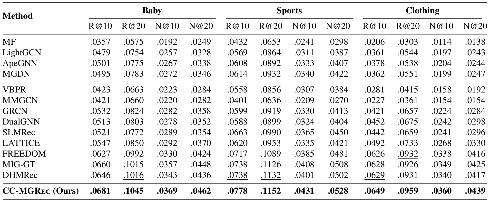
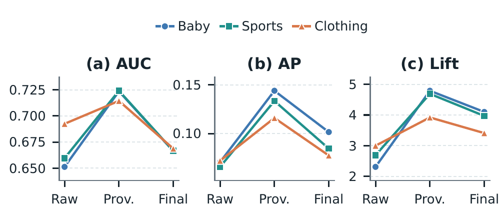
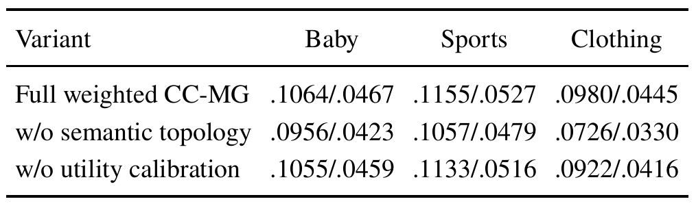
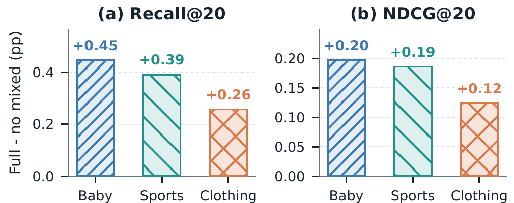

RGSC
用 cross-fitted training behavior 衡量候选语义边的推荐效用，并在保持 destination budget 的条件下重分配权重。
MULTIMODAL RECOMMENDATION · CONTEXT-COUPLED PROPAGATION
让视觉、文本与协同关系在同一传播上下文中共同演化
Beyond Context-Decoupled Propagation: Context-Coupled Multimodal Graph Learning for Recommendation · Manuscript in preparation for The Web Conference (WWW), 2027
01 · MOTIVATION
现有多模态图推荐通常为视觉、文本或不同关系维护独立分支，直到传播结束才融合表示。这样既阻断 collaborative-semantic bridge，也让视觉与文本信息无法共同塑造同一个中间节点状态。

核心观察：late fusion 只能合并已经完成的分支表示，无法补回传播过程中没有发生的跨关系、跨模态组合。
02 · METHOD
CC-MGRec 不额外引入证据，而是重新组织已有的视觉、文本和训练交互：先用训练行为校准内容关系，再将语义关系与观察到的协同关系放入同一图中，最后用共享归一化完成组合传播。

用 cross-fitted training behavior 衡量候选语义边的推荐效用，并在保持 destination budget 的条件下重分配权重。
把校准后的 item relations 与 observed user-item interactions 放入同一节点空间和共享归一化。
复用同一个图算子和表示流，使协同信号与语义信号能在多层路径中自然组合。
单一传播上下文同时减少了分支式稀疏图运算和中间表示维护，并保留从初始身份、多模态 anchor 到高阶组合路径的完整信息。
03 · MAIN RESULTS
实验覆盖 Baby、Sports and Outdoors、Clothing Shoes and Jewelry，并使用 Recall@10/20 与 NDCG@10/20 比较协同推荐、图扩散、多模态表示学习和 item-graph 方法。

04 · MECHANISM ANALYSIS
论文分别检查 semantic relation 的校准质量、语义拓扑与 utility calibration 的作用，以及 collaborative-semantic products 是否真的参与了最终排序。



这些证据共同支持同一结论：CC-MGRec 的提升不只是把多模态表示拼在一起，而是让经过推荐行为校准的异构关系共同决定消息、归一化尺度与中间表示演化。
05 · CITATION
@unpublished{wang2027ccmgrec,
title = {Beyond Context-Decoupled Propagation:
Context-Coupled Multimodal Graph Learning for Recommendation},
author = {Wang, Yumeng and others},
note = {Manuscript in preparation for The Web Conference
(WWW 2027)},
year = {2027}
}